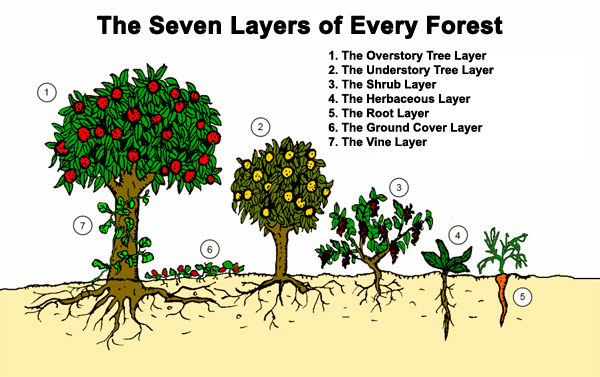
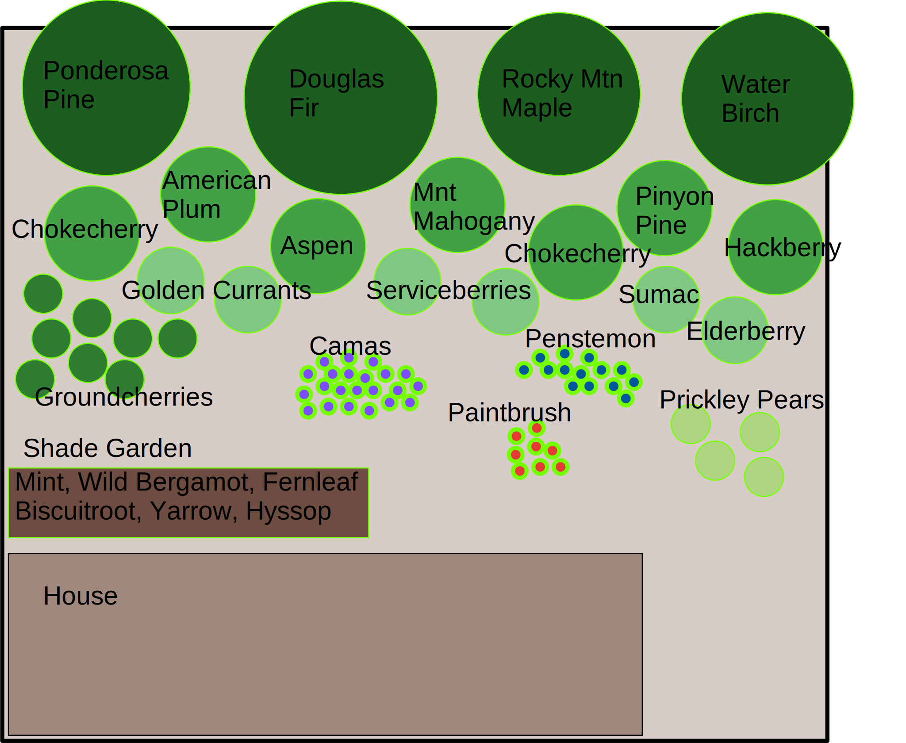

Planting a native garden is pretty straightforward. You can be successful even if this is the first time you've planted something. Following a couple of general rules-of-thumb will help you put the right things in the right places.
When planting, it's good to consider the edge a forest. Closest to the forest are the tallest trees, then the smaller trees, then shrubs, and then the smaller bushes and annuals, herbs, and forbs. Far from the forest are plants that grow bulbs and tubers. Even within the forest there are things that grow right on the ground.

(Artwork by Graham Burnett from his book “Permaculture A Beginners Guide” –
www.spiralseed.co.uk)
When you are planting native gardens, we should try to imitate the conditions in which your plants are found in nature. It is a good idea to spend some time in wild places to familiarize yourself with those conditions. The "Light" category in the native plant lists can indicate whether the plant wants to grow under other plants, or if it wants to be out in the sun.
In a small yard setting, it can be useful to plant your trees closest to your fence and gradually planting smaller plants as you get closer to your house. In larger yards, consider having trees in the middle, and gradually planting smaller, radiating out from the trees.

(Example of many of the different layers a native garden could have. Keep in mind that it's not all-or-nothing. Even
one patch of wildflowers in your yard is a native garden.)